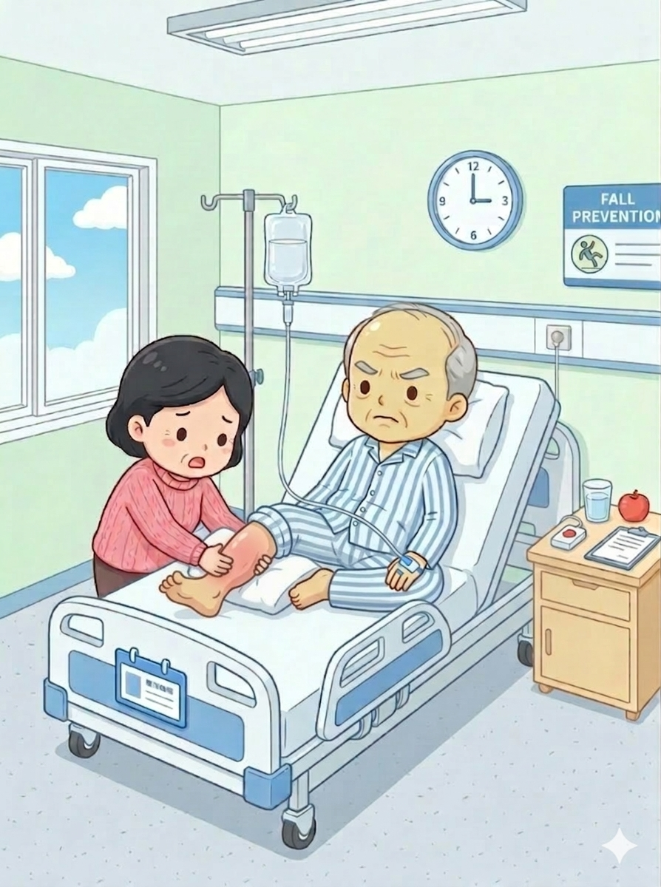
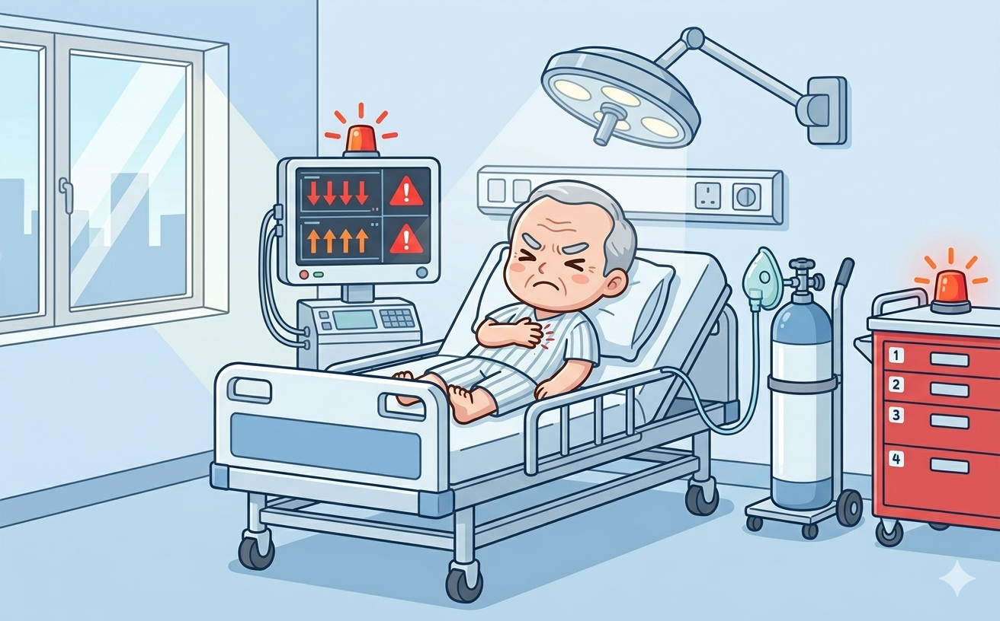

血管卫士
生死时速
生死时速
失败于：Level 1
你的得分已降至0分，挑战失败。
你是骨科新入职的住院医师。今天你将负责照护新入院的张大爷，68岁，因右侧下肢肿胀、疼痛入院，需接受进一步检查和治疗。
请时刻警惕深静脉血栓（DVT）的风险！
现在请告诉我你的姓名：

DVT三大诱因（Virchow三联征）：血流缓慢、静脉壁损伤、血液高凝状态。护理中应避免一切可能导致静脉回流受阻的行为。
你为张大爷安排了相关检查。结果回报——D-二聚体明显升高，Wells评分2分（中度可能）。下一步该怎么办？
D-二聚体升高+Wells评分中度可能，应首选无创的下肢静脉加压超声检查（CUS）。超声可明确是否存在血栓，避免有创检查的风险，也不应在未确诊的情况下盲目抗凝。
超声结果：右侧股静脉血栓形成！
DVT诊断路径：临床表现 → D-二聚体 → Wells评分 → 超声检查（CUS）→ 必要时静脉造影确诊。

张大爷病情稳定，转入ICU继续治疗。
PE急救要点：及时呼叫上级 → 吸氧改善缺氧 → 体位管理 → 持续监测 → 尽快确诊（CTPA）。
认证证书
恭喜 完成
《血管卫士：生死时速》挑战
成绩：分 评级：
你已掌握DVT识别、诊断与PE急救的核心知识。